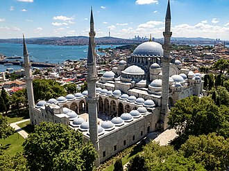

Voorstelling
La mosquée Süleymaniye ou mosquée de Soliman est une mosquée impériale ottomane d'Istanbul, conçue par l'architecte Sinan pour le sultan Soliman le Magnifique et construite de 1550 à 1557.
مسجد سليمان القانوني أو جامع السليمانية. يقع المسجد على التلة الثالثة من تلال إسطنبول السبعة في قلب مجمع السليمانية الذي يتكون من مقبرة وأربع مدارس ومستشفى وفندق ومئذنة ودكاكين وحمّامات ومدرسة قرآنية وضريح المهندس المعماري سنان، ويمد المجموعة بكاملها نظام تموين بالمياه.
The Süleymaniye Mosque is an Ottoman imperial mosque located on the Third Hill of Istanbul, Turkey. The mosque was commissioned by Suleiman the Magnificent and designed by the imperial architect Mimar Sinan. An inscription specifies the foundation date as 1550 and the inauguration date as 1557, although work on the complex probably continued for a few years after this.
Süleymaniye Camii, İstanbul'un Üçüncü Tepesi üzerinde yer alan bir Osmanlı imparatorluk camisidir. Kanuni Sultan Süleyman'ın emriyle inşa edilen cami, imparatorluk baş mimarı Mimar Sinan tarafından tasarlandı. Bir yazıtta, yapının temelinin 1550'de atıldığı ve 1557'de açılışının yapıldığı belirtilmektedir; ancak külliyenin inşaatı muhtemelen bu tarihten birkaç yıl sonrasına kadar sürdü.
Masjid Suleiman Istanbul adalah sebuah masjid peninggalan Kesultanan Utsmaniyah yang berada di kawasan Bukit Ketiga Istanbul, distrik Fatih, Provinsi Istanbul, Turki. Masjid ini didirikan pada tahun 1550 atas perintah Sultan Süleyman I dan dirancang oleh arsitek kekaisaran Ottoman, Mimar Sinan, yang kemudian diresmikan pada tahun 1557 berdasarkan prasasti yang tertulis.
سلیمانیہ مسجد ترکی کے شہر استنبول کی ایک عظیم جامع مسجد ہے۔ یہ مسجد سلطان سلیمان اول کے احکام پر مشہور عثمانی ماہر تعمیرات معمار سنان پاشا نے تعمیر کی۔ مسجد کی تعمیر کا آغاز 1550ء میں اور تکمیل 1557ء میں ہوئی۔
Die Süleymaniye-Moschee ist eine der großen Moscheen in İstanbul. Sie wurde im Auftrag von Sultan Süleyman dem Prächtigen in einer sehr kurzen Bauzeit zwischen den Jahren 1550 und 1557 erbaut und ist ein wichtiges Werk des Architekten Sinan.
La mezquita de Solimán o mezquita de Süleymaniye es una mezquita imperial otomana situada en la tercera colina de Estambul, Turquía. Hasta el año 2019 era la más grande de la ciudad, siendo sucedida por la mezquita de Çamlıca; aun así es una de las panorámicas más conocidas de la ciudad.
La moschea di Solimano il Magnifico, assai più nota semplicemente come Suleymaniye, è una moschea imperiale ottomana di Istanbul costruita tra il 1550 e il 1557.
A Mesquita Süleymaniye ou de Solimão é uma mesquita imperial otomana situada na segunda colina de Istambul, Turquia, no bairro histórico de Eminönü, distrito de Fatih. A sua situação elevada faz dela uma das vistas mais conhecidas de Istambul. A seguir à Basílica de Santa Sofia, que foi convertida em mesquita após a conquista da cidade pelos otomanos, é a maior mesquita de Istambul e uma das maiores realizações do prolífico e genial arquiteto imperial Mimar Sinan. A mesquita faz parte das Zonas Históricas de Istambul, classificadas pela UNESCO como Património Mundial desde 1985.
De Süleymaniye-moskee of Soleimanmoskee is een grote moskee in Istanbul. De moskee werd ontworpen door de architect Sinan in opdracht van de Ottomaanse sultan Süleyman I. De bouw duurde van 1550 tot 1557.
苏莱曼尼耶清真寺 是土耳其伊斯坦布尔市内的数座大清真寺之一。它是由苏莱曼一世下令从1550年至1557年在极短的时间内建成的，是建筑师科查·米馬爾·希南最重要的作品。其包括清真寺在内的宏伟的建筑群既有城市建筑，也有国家性的意义，与法齊赫清真寺拥有同样的重要性。
スレイマニエ・モスク は、オスマン帝国の旧都イスタンブールにあるモスク。1557年完成で、オスマン建築（トルコ建築）の最高作のひとつと言われる。イスタンブールの旧市街にある7つの丘のひとつの頂上に位置する。スレイマン・モスクともいう。
쉴레이마니예 모스크(튀르키예어: Süleymaniye Camii 쉴레이마니예 자미[*])는 터키 이스탄불에 있는 모스크이다. 1557년 완성되어 오스만 건축의 최고 걸작 중 하나로 불린다. 이스탄불의 구시가지에 있는 7개의 언덕 중 하나의 정상에 위치한다.
Мечеть Сулеймание́ — вторая по значению и до открытия в 2019 году мечети Чамлыджа первая по размерам мечеть Стамбула, вмещает более 5000 верующих. Расположена в старой части города, в районе Вефа.
Nhà thờ Hồi giáo Süleymaniye là một nhà thờ Hồi giáo hoàng gia đế quốc Ottoman nằm trên ngọn đồi thứ ba của Istanbul, Thổ Nhĩ Kỳ. Nhà thờ được ủy quyền xây dựng bởi Suleiman I và được thiết kế bởi kiến trúc sư hoàng gia Mimar Sinan. Một dòng chữ ghi rõ năm khởi công là 1550 và khánh thành là 1557. Được xây dựng cuối thành phố tại nơi cao nhất của Istanbul, nhà thờ được xây dựng nhằm tôn vinh sultan Suleiman. Với sự khéo léo của Mimar Sinan, người được coi là kiến trúc sư Ottoman vĩ đại nhất thời kỳ đó kết hợp với lối kiến trúc tỉ mỉ khiến nó là một trong những nhà thờ Hồi giáo đẹp nhất thế giới và là một điểm thu hút khách du lịch.
มัสยิดซิวเลย์มานีเย เป็นมัสยิดหลวงของออตโตมันที่ตั้งอยู่ในอิสตันบูลในตุรกี เป็นมัสยิดที่ใหญ่เป็นที่สองของอิสตันบูลและเป็นสิ่งก่อสร้างที่เป็นที่รู้จักกันดีที่สุดของเมืองสิ่งก่อสร้างหนึ่ง
Ang Masjid Süleymaniye ay isang Imperyal na Otomanong masjid na matatagpuan sa Ikatlong Burol ng Istanbul, Turkiya. Ang masjid ay kinumisyon ni Suleiman ang Marinag at idinisenyo ng imperyal na arkitektong si Mimar Sinan. Tinukoy ng isang inskripsiyon na ang petsa ng paglatag ng pundasyon bilang 1550 at ang petsa ng inaugurasyon bilang 1557. Sa likod ng pader qibla ng masjid ay isang papaloob na naglalaman ng hiwalay na mga oktagonal na mausoleo ni Suleiman the Maringan at ng kaniyang asawa na si Hurrem Sultan (Roxelana). Ang Masjid Süleymaniye ay ang pangalawang pinakamalaking masjid sa lungsod, at isa sa mga kilalang pook-pasyalan ng Istanbul.
Süleymaniyemoskén är en moské i Istanbul uppförd 1550–1557 efter ritningar av den osmanske arkitekten Mimar Sinan på order av sultan Süleyman I. Det är den största moskén i Istanbul och ett välkänt turistmål.
Moscheea Suleymaniye sau Moscheea lui Soliman este o moschee din Istanbul, Turcia. Aceasta este una dintre cele mai mari moschei din oraș, și una dintre cele mai cunoscute din țară.A fost construita în perioada Imperiului Otoman
Verhalen en overleveringen
Historisch feitSinan, de architect van Süleyman
Sultan Süleyman de Prachtlievende vertrouwde zijn grote moskee toe aan Mimar Sinan, de architect van het Rijk, die haar tussen 1550 en 1557 bouwde op de derde heuvel van Istanbul. Eromheen bouwde Sinan een hele wijk van liefdadigheid: scholen, een ziekenhuis, een keuken voor de armen, badhuizen. De sultan rust in een mausoleum achter de moskee. Sinan zelf, die bijna honderd jaar oud werd en honderden gebouwen bouwde, is begraven in een kleine tombe net buiten het complex, bij het huis waar hij woonde.
Bron: Wikipedia : Süleymaniye Mosque · Wikipedia : Mimar Sinan
TraditieVier minaretten, tien balkons
De moskee heeft vier minaretten op de hoeken van de binnenplaats, met in totaal tien balkons. Volgens een traditionele verklaring herinneren de vier minaretten eraan dat Süleyman de vierde sultan was die in Istanbul regeerde, en de tien balkons dat hij de tiende Ottomaanse sultan was. Bij de Ottomanen mocht alleen een sultan een moskee meer dan twee minaretten geven; prinsen en prinsessen hadden er twee, de anderen maar één. Het aantal balkons is een feit, de symbolische betekenis ervan een overlevering.
VolkslegendeDe juwelen van de sjah
Een legende vertelt dat de sjah van Perzië, Tahmasp, toen hij hoorde dat Süleyman een moskee bouwde die groter was dan de Hagia Sophia, hem een kistje edelstenen stuurde, met de suggestie ze te verkopen als het geld zou opraken. Beledigd zou de sultan ze aan Sinan hebben gegeven, die ze zou hebben laten slijpen en in een van de minaretten laten inmetselen. Men vertelt ook dat de luchtstroom in de moskee het roet van de honderden lampen naar een kleine kamer leidde, waar men het opving om er inkt van te maken. Geen enkel document uit die tijd bevestigt het verhaal van de juwelen.
Bron: Istanbul.com : Süleymaniye · Wikipedia : Süleymaniye Mosque
Op de kaart
Documenten en links
- Wikipédia — Français
- Wikipédia — العربية
- Wikipédia — English
- Wikipédia — Türkçe
- Wikipédia — Bahasa Indonesia
- Wikipédia — اردو
- Wikipédia — Deutsch
- Wikipédia — Español
- Wikipédia — Italiano
- Wikipédia — Português
- Wikipédia — Nederlands
- Wikipédia — 中文
- Wikipédia — 日本語
- Wikipédia — 한국어
- Wikipédia — Русский
- Wikipédia — Tiếng Việt
- Wikipédia — ไทย
- Wikipédia — Filipino
- Wikipédia — Svenska
- Wikipédia — Română
- Wikidata — Q178643
Gegevens: Wikidata (CC0), elke 3 maanden bijgewerkt. Het jaar is de oudst bekende bouwdatum van het gebouw: voor een gebouw dat later een moskee werd (zoals de Hagia Sophia), is het die van het oorspronkelijke gebouw. Foto's: Wikimedia Commons, maker en licentie op de pagina van elke foto.